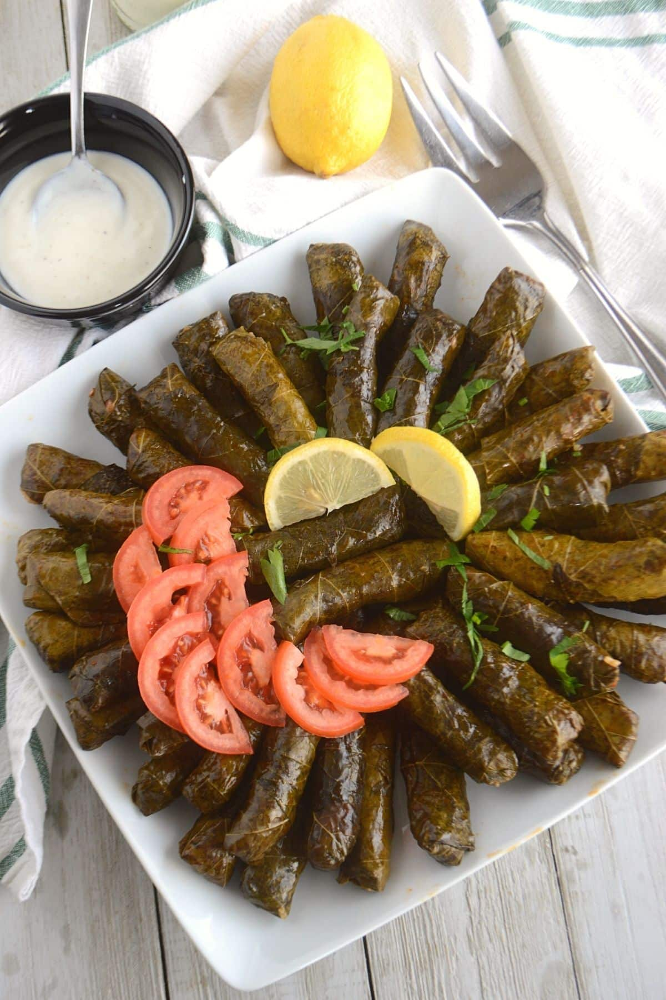

Warak Enab
Home

Description
Egyptian stuffed grape leaves, also known as mahshi warak enab, is a traditional dish in Egyptian cuisine that showcases delicate vine leaves stuffed with a flavorful rice and herb filling. These stuffed grape leaves are often enjoyed as appetizers or as part of a larger meal. With their savory taste and aromatic spices, they are sure to delight your taste buds.
Ingredients
- 500 grams grape leaves
- 2 to 3 cups of Egyptian rice (about 500 grams)
- 250 grams of ground beef
- 2 bunches each of parsley, cilantro and dill
- 1/2 cup of fresh mint, finely chopped
- 500 grams of finley chopped onions or grated
- 1 tablespoon butter or ghee
- 1/4 cup of olive oil
- 1 chopped chili pepper, tomato, onion for the base of the pot
- 1 tablespoon tomato paste
- 1 tablespoon black pepper
- 2 tablespoons salt
- 1/2 tablespoon cinnamon
- 1/2 tablespoon cumin
- 1/2 tablespoon paprika
- 1 tablespoon 7 spices
- juice of 2 limes
- blend 1 kg of tomato
- 1 liter of beef stock(optional)
Steps
- In a large pot, bring water to a boil. Add the grape leaves by adding them to the boiling water for about 1-2 minutes. This will soften the leaves and make them more pliable. Trim the stem. Drain and set aside.
- In a mixing bowl, combine the Egyptian rice, ground beef, finely or grated chopped onion, blended tomato, fresh parsley, fresh dill, fresh cilantro, fresh mint, olive oil, lemon juice, cumin, 7 spices, salt, and pepper, cinnamon, paprika. Mix well to ensure the ingredients are evenly distributed.
- Place a grape leaf on a clean surface, shiny side down.
- Take about a tablespoon of the rice mixture and place it in the center of the leaf.
- Fold the sides of the leaf inward and roll it tightly, similar to rolling a burrito or spring roll.
- Repeat the process with the remaining grape leaves and rice mixture until all the filling is used.
- Line the bottom of a large pot with a sliced onion, tomato, green bell pepper , green chili pepper to prevent the stuffed grape leaves from sticking. you can also add lamb fat or small lamb cubes.
- Arrange the stuffed grape leaves in layers in the pot, placing them closely together. This will help them hold their shape during cooking.
- Add the beef stock to the pot to cover the stuffed grape leaves or if you don't have stock you can put boiling water, add to it spices, lemon juice then add olive oil
- Cover the pot with a lid and bring it to a gentle simmer over medium-low heat. Cook for about 45 minutes to 1 hour, or until the rice is fully cooked and the grape leaves are tender.
- Once cooked, carefully flip it to a large serving plate.
- Serve the stuffed grape leaves warm or at room temperature, as an appetizer or part of a larger meal. They can be enjoyed on their own or accompanied by yogurt with cucumber and diced garlic.